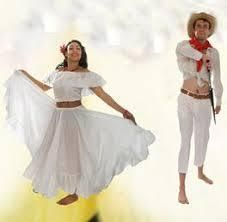
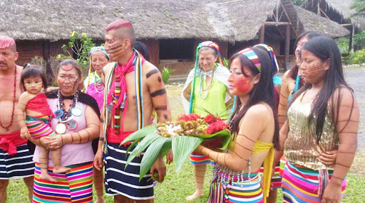
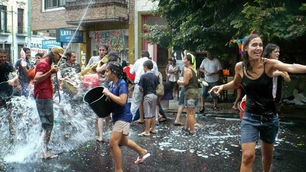
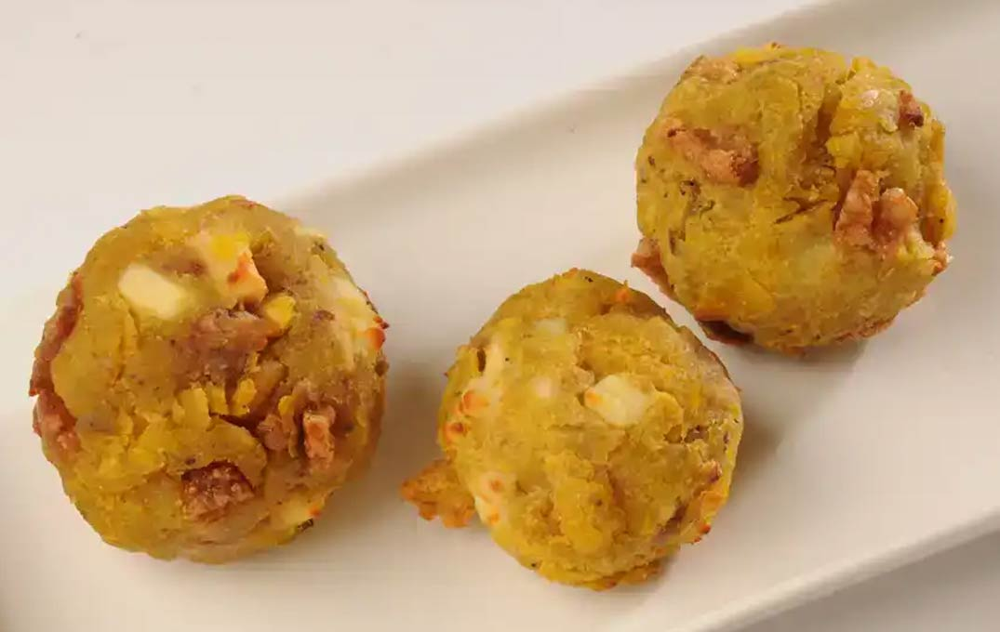

Guayaquil
La región Costa o litoral ecuatoriana es una de las cuatro regiones geográficas de Ecuador, ubicada entre la cordillera de los Andes y el océano Pacífico. Con sus 670 km de largo y 150 km de ancho, destaca por su diversidad de paisajes, que incluyen bosques secos al sur, bosques húmedos al norte, manglares y una extensa red fluvial. Guayaquil, su ciudad más poblada, es el centro económico y cultural de esta región


Geografia y hubicacion
La región Costa ecuatoriana es una de las cuatro regiones geográficas de Ecuador, ubicada entre la cordillera de los Andes y el océano Pacífico. Con sus 670 km de largo y 150 km de ancho, destaca por su diversidad de paisajes, que incluyen bosques secos al sur, bosques húmedos al norte, manglares y una extensa red fluvial. Guayaquil, su ciudad más poblada, es el centro económico y cultural de esta regió

Clima de la costa
El clima de la región Costa se caracteriza por su clima tropical, sin embargo varía significativamente
entre el norte y sur. En el norte, el clima es tropical húmedo, con temperaturas que oscilan entre 25°C
a 33°C, acompañado de fuertes lluvias. Por otro lado, en el sur el clima tiende a ser tropical seco, con
temperaturas similares pero con menos humedad.
- Norte: Clima tropical húmedo: Alta humedad y lluvias abundantes, especialmente en invierno.
- Sur/Oeste:Clima cálido y seco: altas temperaturas y lluvia escasa
- Centro: Cálido y húmedo
- lluvias: Diciembre a mayo
- Verano : Junio a diciembre


CULTURA Y TRADICIONES
La región Costa del Ecuador ha heredado cultural originada por antiguas civilizaciones precolombinas y enriquecida con influencias hispánicas y africanas. Esta diversidad se refleja tanto en sus costumbres como en su forma de vestir, celebrar y vivir.

Orígenes culturales
Entre las culturas más representativas están la Valdivia, Chorrera, Machalilla, Tolita, Guangala, Manteña y Huancavilca. Estas civilizaciones dejaron huellas en la cerámica, organización social y conocimientos agrícolas.


Costumbres y tradiciones populares
Fiesta tradicional donde se muestran habilidades con el ganado. Es símbolo de orgullo y destreza campesina, especialmente en las zonas rurales de Guayas, Los Ríos y Manabí.

Religiosas y patronales: En cada ciudad y pueblo costero se celebran fiestas que combinan rituales católicos con elementos culturales locales.


Vestimenta típica
Por el clima cálido, predominan telas ligeras y colores vivos. Los trajes varían según el grupo cultural:
- Montubios: Camisas brillantes, sombreros de paja toquilla y machetes como símbolo de trabajo. 
- Tsáchilas: Vestimenta tribal, con pintura corporal de achiote y accesorios naturales. 
- Cholos pesqueros: Ropa sencilla, ideal para la pesca, con pantalones arremangados y sombreros estilizados.
- Moda actual: Aunque hoy predomina la ropa moderna, las prendas tradicionales siguen vigentes eneventos
- folclóricos y culturales.


Música y danzas

Festividades y celebraciones
La Costa vive sus fiestas con alegría y tradición. Su celebración refleja la identidad costeña, desde rituales ancestrales hasta encuentros llenos de color
-

San Pedro y San Pablo (Machalilla-Puerto López): Cada junio, Machalilla rinde homenaje a San
Pedro y San,Pablo con procesiones marineras. Además, se vive un ambiente festivo con bailes y comidas
típicas.
- Carnaval de Ventanas (Los Ríos): Antes de la Cuaresma, Ventanas se llena de comparsas, carros
alegóricos y música en cada calle. También se corona a la reina del Carnaval.
- Virgen de la Nube (Torata, El Oro): El 15 de julio, Torata celebra con misas al aire libre y bailes
folclóricos. Tras el pregón, la gente disfruta de quema de castillos.
- San Pedro (patrono de los pescadores): Cada 29 de junio, los pescadores llevan ofrendas de pan, vino y redes al templo. Luego comparten banquetes junto al muelle.
- Virgen de las Mercedes (Los Ríos y Manabí): El 15 de septiembre, se organizan procesiones marinas y
ferias Artesanales. Además, hay actos litúrgicos y muestra de danzas locales.
- Virgen del Carmen (pescadores del litoral): Cada 16 de julio, los barcos reciben bendición en rituales junto al mar. Luego, las redes y embarcaciones desfilan por la costa.

Gastronomía Costera
La Costa del Ecuador ofrece sabores frescos y marinos. Dominada por el plátano en todas sus texturas, el maní tostado y los frutos del Pacífico. Sus recetas combinan productos locales y técnicas ancestrales para un sabor único.

Platos Típicos
- Encebollado: Caldo de albacora con yuca, coronado con cebolla curtida en limón. Se sirve con chifle y pan, y es el aliado infalible contra la resaca.
- Ceviche costeño: Mezcla jugosa de camarón, concha o pescado marinado en jugo de limón y naranja agria, con unn toque citantro y ají
- Ceviche de camarón: mariscos marinados en jugo de limón y naranja, con cilantro y cebolla.
- Encocado esmeraldeño: mariscos cocinados en leche de coco, especias y hierbas frescas. Sabor típico deEsmeraldas.
- Corviche manabita: Bolas de plátano verde rellenas de pescado refrito y maní, fritas hasta dorar
- Bolón de verde: bola de plátano verde machacado con queso o chicharrón. Ideal para el desayuno.

.jpg)



Bebidas tradicionales
- >Morocho: bebida caliente de maíz blanco y leche, dulce y reconfortante.
- Guarapo: Jugo fermentado de caña de azúcar, servido frío con un toque de licor
- Jugo de naranjilla: licuado cítrico, refrescante y ligeramente ácido para el calor costero.


Artesanías
- Tejidos de Otavalo
- Joyería de Chordeleg
- Máscaras de Pujilí
Sombreros de paja toquilla